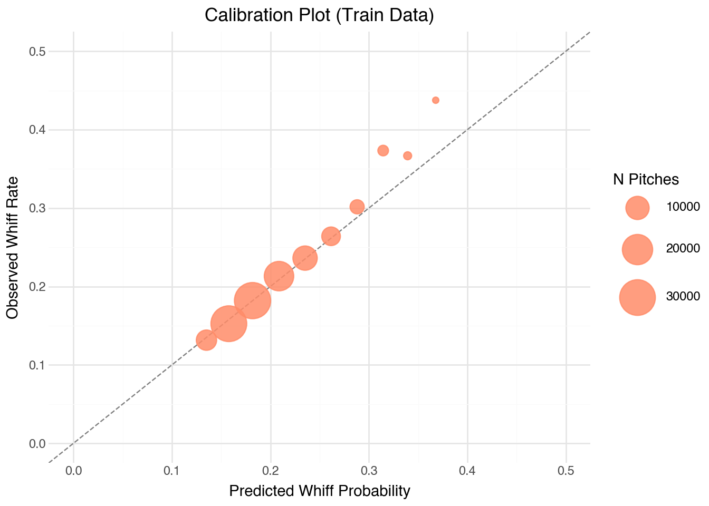
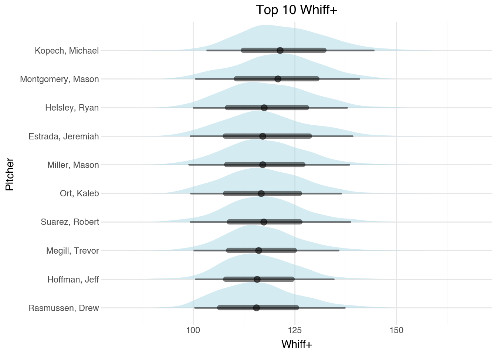
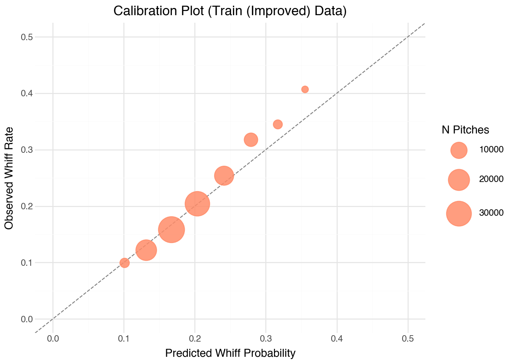
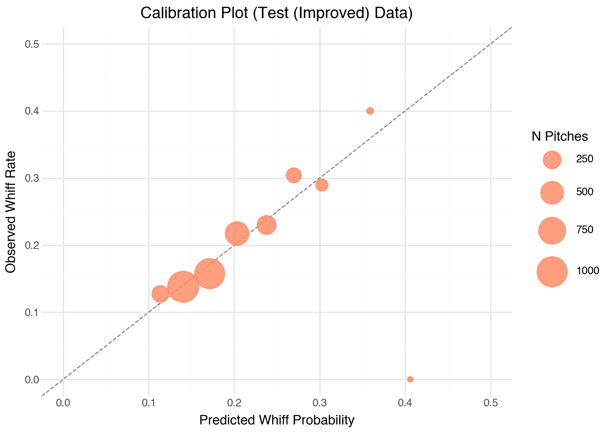
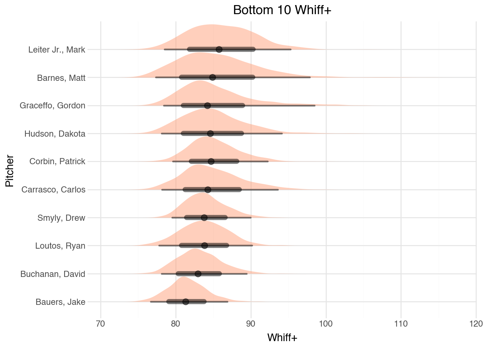
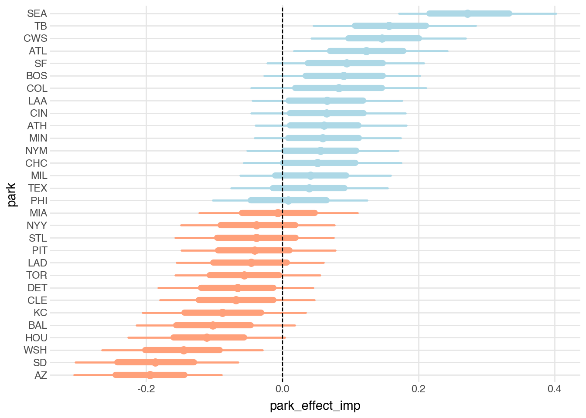
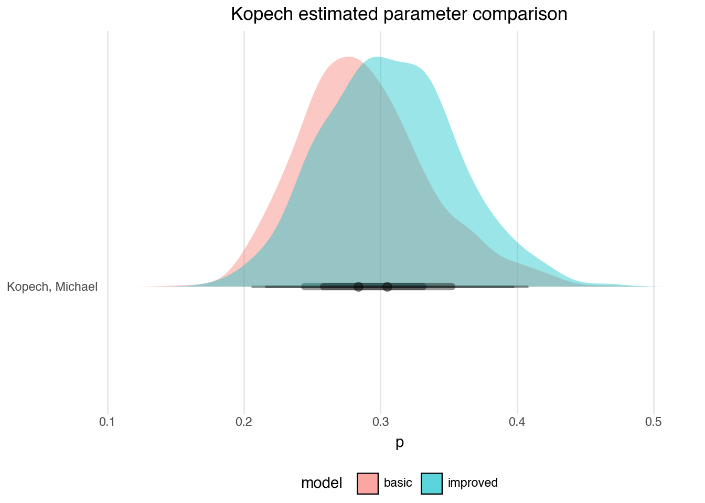

import sys
# Python's multiprocessing spawn code assumes __main__.__spec__ exists,
from mizani.scale import scale_continuous
# but Jupyter/Quarto kernels don't set it. Fix before pymc_bart imports.
if not hasattr(sys.modules.get("__main__"), "__spec__"):
sys.modules["__main__"].__spec__ = None
from pybaseball import statcast, cache
import pymc as pm
import pymc_bart as pmb
import polars as pl
import pandas as pd
import numpy as np
import arviz as az
from pathlib import Path
from sklearn.preprocessing import StandardScaler
from plotnine import *
import bayestidy as bt
import pickle
import xarray as xr
from pymc_bart.utils import _sample_posterior # needed for BART with new session
# Set to True to re-fetch data from pybaseball and refit the model
RERUN = False
if RERUN or not Path("data/df.parquet").exists():
cache.disable()
df = statcast(start_dt="2024-03-28", end_dt="2024-09-29")
pl.from_pandas(df).write_parquet("data/df.parquet")
else:
df = pl.read_parquet("data/df.parquet").to_pandas()PyMC Labs put out a post recently called Modeling Swinging Strikes with Bayesian Additive Regression Trees (BART). It goes over implementing BART models in PyMC and provides a nuanced use case.
At first I was largely dissapointed that only some of the code was included. While it would have been nice to have more of the sports logic to help replicate it, it did describe it through text. I have a better understanding now about the balance of detail in a post after working on this one. To include all the code would have required more time discussing the process, which takes away from the main premise of demonstrating the model.
The work following is my attempt at recreating the models, visualizations, and analysis.
Additionally, being an R enthusiast I built a bayestidy package that replicates some of what Tidybayes does for the R ecosystem. This is an opinonated framework to working with the posterior distributions, built on previous work I’ve done.
Imports
The original post mentions that all of this can be run on a local laptop. It can be done on a local laptop… technically. My machine is quite small relative to today’s standards with 16 gb of memory, so that was a bit of a stretch.
I have simple RERUN flag to compile the models or not. To work more efficiently I saved the models to disk and subsequently loaded them back in with context managers to access what was needed. This way I didn’t have to have all of it in memory at once, which was critical to render the document.
Note
I leveraged Claude to understand how to get PyMC to render in quarto and jupyter. The first set of imports handle that, and LLM commented as such.
I never figured that out on my own, and ran the chains consecutively in previous posts…
Plotting functions below.
Code
def calibration_plot(p_hat, y, label="Train"):
cal_df = pl.DataFrame({"p_hat": p_hat.astype(np.float64), "y": y})
breaks = np.linspace(cal_df["p_hat"].min(), cal_df["p_hat"].max(), 11)[
1:-1
].tolist()
cal_summary = (
cal_df.with_columns(pl.col("p_hat").cut(breaks).alias("bin"))
.group_by("bin")
.agg(
pred_mean=pl.col("p_hat").mean(),
obs_mean=pl.col("y").mean(),
n=pl.col("y").count(),
)
.sort("pred_mean")
.to_pandas()
)
return (
ggplot(cal_summary, aes("pred_mean", "obs_mean", size="n"))
+ geom_abline(intercept=0, slope=1, linetype="dashed", color="grey")
+ geom_point(color="#FF8C69", alpha=0.85)
+ scale_size_continuous(range=(2, 14), name="N Pitches")
+ labs(
title=f"Calibration Plot ({label} Data)",
x="Predicted Whiff Probability",
y="Observed Whiff Rate",
)
+ theme_minimal()
+ coord_cartesian(xlim=[0, 0.5], ylim=[0, 0.5])
)
def add_whiff_plus(df):
assert "p_hat" in df.columns, "dataframe does not have `p_hat`"
p_hat = pl.col("p_hat")
return df.with_columns(whiff_plus=100 + 10 * (p_hat - p_hat.mean()) / p_hat.std())Model
The first model replicates PyMC Lab’s 4-feature model. If my sports logic is somewhat correct for how they filtered the data, the rest was fairly straightforward.
- filter for
4-Seam Fastball - calculate whiffs as swings
- I removed 200 records with null values
- Split into train/test splits
Code
cols = [
"release_speed",
"pfx_x",
"pfx_z",
"release_spin_rate",
"description",
"pitcher",
"player_name",
]
pitch_name = "4-Seam Fastball"
# this came from assessing the following and removing bunts
# df.assign(swing = lambda x: ~x['swing_length'].isna()).groupby(['swing', 'description']).count()
swings = [
"hit_into_play",
"swinging_strike",
"foul_tip",
"swinging_strike_blocked",
"foul",
]
whiffs = ["swinging_strike", "swinging_strike_blocked"]
df_model = df.copy().query(f'pitch_name == "{pitch_name}" and description in {swings}')[
cols
]
df_model = df_model.dropna()
# Hold out 20 random pitchers for test set
rng = np.random.default_rng(42)
pitchers = df_model["pitcher"].unique()
holdout_pitchers = rng.choice(pitchers, size=20, replace=False)
train_mask = ~df_model["pitcher"].isin(holdout_pitchers)
feature_cols = ["release_speed", "pfx_x", "pfx_z", "release_spin_rate"]
y = df_model["description"].isin(whiffs).astype(int)
# Standardize features to z-scores (fit on train only)
scaler = StandardScaler()
X_train = scaler.fit_transform(df_model.loc[train_mask, feature_cols])
X_test = scaler.transform(df_model.loc[~train_mask, feature_cols])
y_train = y[train_mask].values
y_test = y[~train_mask].values
player_names_train = df_model.loc[train_mask, "player_name"].values
coords = {"obs": player_names_train}
Caution
Working with the posterior az.InferenceData object turned out to have different behavior than expected. One of the biggest gotchas was how BART models are saved to disk, and the tree information you lose when starting a new session. I’ve implemented it below, but it is covered in this GitHub issue
Essentially I was able to still save the object and load it into new sessions to continue working with the posterior, however the tree information was not saved with the object (that is the extent of my understanding). Coming back to this in a new session, only the posterior distributions for the saved parameters and values were available. Predictions were all off.
I ended up finding a solution documented in this GitHub issue.
So here, I’m saving the az.InferenceData object and additionally a pickle file of the trees. Later on I used the functions in that github issue to do predictions.
if (
RERUN
or not Path("models/trace.nc").exists()
or not Path("models/bart_trees.pkl").exists()
):
with pm.Model(coords=coords) as bart_model:
X_data = pm.Data("X_data", X_train, dims=("obs", "feature"))
y_data = pm.Data("y_data", y_train, dims="obs")
mu_bart = pmb.BART("mu_bart", X=X_data, Y=y_data, m=100)
mu = pm.Deterministic("mu", mu_bart, dims="obs")
p = pm.Deterministic("p", pm.math.sigmoid(mu), dims="obs")
pm.Bernoulli("y_obs", p=p, observed=y_data, dims="obs")
idata = pm.sample(draws=2000, chains=2, random_seed=42)
idata.to_netcdf("models/trace.nc")
del idata
all_trees = list(mu_bart.owner.op.all_trees)
with open("models/bart_trees.pkl", "wb") as f:
pickle.dump(all_trees, f)
else:
with open("models/bart_trees.pkl", "rb") as f:
all_trees = pickle.load(f)Working with constraints
The p_train aggregation is used for the calibration plots.
with xr.open_dataset("models/trace.nc", group="posterior") as post:
p_train = post["p"].mean(dim=("chain", "draw")).values
obs_names_train = post.coords["obs"].values
with xr.open_dataset("models/trace.nc", group="observed_data") as obs_data:
y_train = obs_data["y_obs"].values
# Update coords to match the saved model's obs ordering
coords = {"obs": obs_names_train}Test Set
The workaround for BART in new sessions is to use pymc_bart.utils._sample_posterior(). Unlike most Bayesian models I’ve worked with, the predictions are from the trees and not a draw from a combination of parameters. I beleive if I wanted to sample the posterior predictive values for the test set, I could have done something like this:
with bart_model:
pm.set_data({"X_data": X_test})
ppc = pm.sample_posterior_predictive(idata, var_names=["mu", "p"])Then saved that with the az.Inferencedata object. For the BART model, the calibrations on the test set give insight to the validity of the model’s ability to predict, so I didn’t go through that process here.
rng = np.random.default_rng(42)
mu_test_samples = _sample_posterior(all_trees, X_test, rng=rng, size=500, shape=1)
# shape: (500, n_test, 1) → squeeze last dim → (500, n_test)
mu_test_samples = mu_test_samples.squeeze(-1)
p_test = (1 / (1 + np.exp(-mu_test_samples))).mean(axis=0)Calibration Plots
calibration_plot(p_train, y_train, label="Train")
calibration_plot(p_test, y_test, label="Test")
Looking good!
Whiff+
I appreciated this metric as I have little to no domain knowledge in baseball. The pitcher names could be replaced with human-readable uuids and it would not effect on my ability to work with the data.
Code
if not isinstance(df, pl.DataFrame):
df = pl.from_pandas(df)
df_train = pl.DataFrame({
"player_name": obs_names_train,
"p_hat": p_train.astype(np.float64),
}).pipe(add_whiff_plus)
df_test = pl.from_pandas(df_model.loc[~train_mask].assign(p_hat=p_test)).pipe(add_whiff_plus)Median whiff plus leaderboard - training set
leaderboard = df_train.group_by("player_name").agg(
pl.col("whiff_plus").median()
).sort("whiff_plus", descending=True)
leaderboard
shape: (730, 2)
| player_name | whiff_plus |
|---|---|
| str | f64 |
| "Kopech, Michael" | 125.462949 |
| "Montgomery, Mason" | 124.361451 |
| "Helsley, Ryan" | 120.247161 |
| "Ort, Kaleb" | 119.918061 |
| "Estrada, Jeremiah" | 119.773609 |
| … | … |
| "Lyles, Jordan" | 83.248874 |
| "Dunning, Dane" | 83.025733 |
| "Lively, Ben" | 82.574925 |
| "Rogers, Tyler" | 82.3153 |
| "Crawford, Brandon" | 82.221916 |
Visualizing the leaderboard
The size of the dataset did not lend well to work with the new package. In its current state, bayestidy will convert everything to pandas in underlying plotnine functions, as it is yet to have first class polars support.
Note
This is a long-standing issue that needs a solution, outside of polars from what I can tell.
The tidybayes approach would have been something like the following:
fit |>
as_draws_df() |>
pivot_longer(everything()) |>
filter(player %in% player_names) |>
ggplot(aes(value, player_name)) |>
stat_halfeye()With this size of dataset, bt.spread_draws() also really struggled here. I’m still learning how I can make this better, but for now I compute whiff+ in xarray space across the full pitcher population before subsetting.
At least I can still use the tidy framework for plotting!
def whiff_plus_plot(leaderboard, post, coords, n=15, top=True, var="p"):
players = (leaderboard.head(n) if top else leaderboard.tail(n))[
"player_name"
].to_list()
indices = np.where(np.isin(coords["obs"], players))[0]
p_da = post[var]
p_mean = p_da.mean(dim="obs")
p_std = p_da.std(dim="obs")
whiff_plus_da = (100 + 10 * (p_da - p_mean) / p_std).isel(obs=indices)
df_draws = bt.spread_draws(
whiff_plus_da.to_dataset(name="whiff_plus"), "whiff_plus", group=None
)
order = (
df_draws.group_by("obs")
.agg(pl.col("whiff_plus").mean())
.sort("whiff_plus")["obs"]
.to_list()
)
plot_data = df_draws.group_by("obs").map_groups(
lambda df: df.sample(n=min(100_000, len(df)), with_replacement=False)
)
title = f"Top {n} Whiff+" if top else f"Bottom {n} Whiff+"
fill = "lightblue" if top else "lightsalmon"
return (
ggplot(plot_data, aes("whiff_plus", "obs"))
+ bt.stat_halfeye(fill=fill, alpha=0.5)
+ scale_y_discrete(limits=order)
+ labs(title=title, x="Whiff+", y="Pitcher")
+ theme_minimal()
)Code
with xr.open_dataset("models/trace.nc", group="posterior") as post:
plot_top = whiff_plus_plot(leaderboard, post, coords, n=10, top=True)
plot_bottom = whiff_plus_plot(leaderboard, post, coords, n=10, top=False)
plot_top
Code
plot_bottom
Model (Improved)
Next to implement their improved model, which included a lot of baseball physics that I barely grasp. I’m just trying to learn BART to be able to use it in a domain I’m familiar with, so this logic was mostly LLM generated.
What I did find incredibly useful was it’s combination of a hierarchical component for park, in conjunction with a tree based model. PyMC made this really slick to implement.
Logic to setup the training and test sets below. They both have similar training splits, but I have inconsistent coordinate mappings and it is not worth the couple of hours it takes to run on my machine to work through a clean refactor.
Code
if isinstance(df, pl.DataFrame):
df = df.to_pandas()
cols = [
"release_speed",
"pfx_x",
"pfx_z",
"release_spin_rate",
"description",
"pitcher",
"player_name",
"home_team",
]
df["platoon_indicator"] = (df["stand"] == df["p_throws"]).astype(int)
# ------------- Disclaimer ------------------------------
# This is outside the scope of what I wanted to learn here. All of the physics
# features are generated from claude code.
# Spin axis is a clock-face angle in degrees
# Convert to a predicted movement direction unit vector
spin_rad = np.radians(df["spin_axis"])
pred_x = np.sin(spin_rad) # horizontal component of predicted movement
pred_z = np.cos(spin_rad) # vertical component of predicted movement
# Actual movement vector
act_x = df["pfx_x"]
act_z = df["pfx_z"]
# Angle between predicted and actual movement vectors
dot = pred_x * act_x + pred_z * act_z
pred_mag = np.sqrt(pred_x**2 + pred_z**2) # always 1 since it's a unit vector
act_mag = np.sqrt(act_x**2 + act_z**2)
df["axis_differential"] = np.degrees(
np.arccos(np.clip(dot / (pred_mag * act_mag), -1, 1))
)
# ----------------------------------------------------------
new_cols = [
"release_pos_x",
"release_pos_z",
"release_extension",
"platoon_indicator",
"axis_differential",
]
pitch_name = "4-Seam Fastball"
# this came from assessing the following and removing bunts
# df.assign(swing = lambda x: ~x['swing_length'].isna()).groupby(['swing', 'description']).count()
swings = [
"hit_into_play",
"swinging_strike",
"foul_tip",
"swinging_strike_blocked",
"foul",
]
whiffs = ["swinging_strike", "swinging_strike_blocked"]
df_model_imp = df.copy().query(
f'pitch_name == "{pitch_name}" and description in {swings}'
)[cols + new_cols]
df_model_imp = df_model_imp.dropna()
# Hold out 20 random pitchers for test set
rng = np.random.default_rng(42)
pitchers_imp = df_model_imp["pitcher"].unique()
holdout_pitchers_imp = rng.choice(pitchers_imp, size=20, replace=False)
train_mask_imp = ~df_model_imp["pitcher"].isin(holdout_pitchers_imp)
feature_cols_imp = ["release_speed", "pfx_x", "pfx_z", "release_spin_rate"] + new_cols
y_imp = df_model_imp["description"].isin(whiffs).astype(int)
# Standardize features to z-scores (fit on train only)
scaler_imp = StandardScaler()
X_imp_train = scaler_imp.fit_transform(
df_model_imp.loc[train_mask_imp, feature_cols_imp]
)
X_imp_test = scaler_imp.transform(df_model_imp.loc[~train_mask_imp, feature_cols_imp])
y_imp_train = y_imp[train_mask_imp].values
y_imp_test = y_imp[~train_mask_imp].values
# Encode home_team as integer park indices (fit on train only)
park_categories = pd.Categorical(
df_model_imp.loc[train_mask_imp, "home_team"]
).categories
n_parks_improved = len(park_categories)
park_idx_imp_train = pd.Categorical(
df_model_imp.loc[train_mask_imp, "home_team"], categories=park_categories
).codes
park_idx_imp_test = pd.Categorical(
df_model_imp.loc[~train_mask_imp, "home_team"], categories=park_categories
).codes
player_names_imp_train = df_model_imp.loc[train_mask_imp, "player_name"].values
coords_imp = {"obs": player_names_imp_train}if (
RERUN
or not Path("models/trace_improved.nc").exists()
or not Path("models/bart_trees_imp.pkl").exists()
):
with pm.Model(coords=coords_imp) as improved_bart_model:
# ------------- DATA -------------------------
X_imp_data = pm.Data("X_imp_data", X_imp_train)
y_imp_data = pm.Data("y_imp_data", y_imp_train)
park_idx_imp_data = pm.Data("park_idx_imp_data", park_idx_imp_train)
# ------------- PARAMS -------------------------
mu_bart_imp = pmb.BART("mu_bart_imp", X=X_imp_data, Y=y_imp_data, m=150)
park_sigma_imp = pm.HalfNormal("park_sigma_imp", sigma=0.5)
park_effect_imp = pm.Normal(
"park_effect_imp", mu=0, sigma=park_sigma_imp, shape=n_parks_improved
)
mu_imp = pm.Deterministic(
"mu_imp",
mu_bart_imp + park_effect_imp[park_idx_imp_data],
)
p_imp = pm.Deterministic("p_imp", pm.math.sigmoid(mu_imp))
# ------------- Likelihood -------------------------
pm.Bernoulli("y_obs_imp", p=p_imp, observed=y_imp_data)
idata_imp = pm.sample(draws=2000, chains=2, random_seed=42)
idata_imp.to_netcdf("models/trace_improved.nc")
del idata_imp
all_trees_imp = list(mu_bart_imp.owner.op.all_trees)
with open("models/bart_trees_imp.pkl", "wb") as f:
pickle.dump(all_trees_imp, f)
else:
with open("models/bart_trees_imp.pkl", "rb") as f:
all_trees_imp = pickle.load(f)Predictions
I had to use the same _sample_posterior() function here to work with the object in new sessions. In addition to mu, there is also the park_effect parameter that needs to be incorporated.
with xr.open_dataset("models/trace_improved.nc", group="posterior") as post:
p_imp_train = post["p_imp"].mean(dim=("chain", "draw")).values
park_effects_all = post["park_effect_imp"].values.reshape(-1, n_parks_improved)
# Predict on test set using _sample_posterior + park effects
rng_imp = np.random.default_rng(42)
mu_bart_test_samples = _sample_posterior(all_trees_imp, X_imp_test, rng=rng_imp, size=500, shape=1)
# shape: (500, n_test, 1) → (500, n_test)
mu_bart_test_samples = mu_bart_test_samples.squeeze(-1)
# Sample matching park effects from posterior
n_samples = mu_bart_test_samples.shape[0]
sample_idx = np.random.default_rng(42).choice(len(park_effects_all), size=n_samples, replace=False)
park_effects_test = park_effects_all[sample_idx][:, park_idx_imp_test] # (500, n_test)
mu_imp_test = mu_bart_test_samples + park_effects_test
p_imp_test = (1 / (1 + np.exp(-mu_imp_test))).mean(axis=0)calibration_plot(p_imp_train, y_imp_train, label="Train (Improved)")
calibration_plot(p_imp_test, y_imp_test, label="Test (Improved)")
Calibration looking even better on the test set!
Median whiff plus leaderboard (Improved)
Code
df_train_imp = pl.from_pandas(
df_model_imp.loc[train_mask_imp].assign(p_hat=p_imp_train)
).pipe(add_whiff_plus)
df_test_imp = pl.from_pandas(
df_model_imp.loc[~train_mask_imp].assign(p_hat=p_imp_test)
).pipe(add_whiff_plus)
leaderboard_imp = (
df_train_imp.group_by(["player_name", "pitcher"])
.agg(pl.col("whiff_plus").median())
.sort("whiff_plus", descending=True)
)
leaderboard_imp
shape: (731, 3)
| player_name | pitcher | whiff_plus |
|---|---|---|
| str | i64 | f64 |
| "Kopech, Michael" | 656629 | 125.205007 |
| "Ort, Kaleb" | 672391 | 120.787765 |
| "Otañez, Michel" | 671305 | 119.323257 |
| "Núñez, Dedniel" | 673380 | 118.740277 |
| "García, Yimi" | 554340 | 118.655864 |
| … | … | … |
| "Barnes, Matt" | 598264 | 82.841306 |
| "Smyly, Drew" | 592767 | 82.437835 |
| "Loutos, Ryan" | 702795 | 82.084812 |
| "Buchanan, David" | 571527 | 81.49745 |
| "Bauers, Jake" | 641343 | 79.865233 |
Code
with xr.open_dataset("models/trace_improved.nc", group="posterior") as post:
post_renamed = (
post
.assign_coords(p_imp_dim_0=("p_imp_dim_0", player_names_imp_train))
.rename({"p_imp_dim_0": "obs"})
)
plot_top_imp = whiff_plus_plot(leaderboard_imp, post_renamed, coords_imp, n=10, top=True, var="p_imp")
plot_bottom_imp = whiff_plus_plot(leaderboard_imp, post_renamed, coords_imp, n=10, top=False, var="p_imp")
park_effects = bt.spread_draws(post, "park_effect_imp", group=None).join(
pl.DataFrame({"park": pl.Series(park_categories)}).with_row_index(),
left_on="park_effect_imp_dim_0",
right_on="index",
)
plot_top_imp
Code
plot_bottom_imp
Again, I don’t feel like refactoring too much – but a more effective plot would have been to combine the top and bottom players together and colored them appropriately. This would show the discrepancy.
Park Effects
This is what fascinated me and exactly why I was driven to learn some of this. I’m thankful that they made the blog post to show it in action.
Unlike the previous posterior distributions, bayestidy is well suited here as there are only 30 parks, so the dataset is only 30 x 2 x 2000. This is where the package and tidy framework can really shine. (on my small machine)
park_means = park_effects.group_by("park").agg(
pl.col("park_effect_imp").mean().alias("park_mean")
)
order = park_means.sort("park_mean")["park"].to_list()
park_effects_plot = park_effects.join(park_means, on="park").with_columns(
sign=pl.when(pl.col("park_mean") < 0)
.then(pl.lit("negative"))
.otherwise(pl.lit("positive"))
)
(
ggplot(park_effects_plot, aes("park_effect_imp", "park", color="sign"))
+ bt.stat_pointinterval()
+ scale_y_discrete(limits=order)
+ geom_vline(xintercept=0, linetype="dashed")
+ scale_color_manual(
values={"negative": "lightsalmon", "positive": "lightblue"}, guide=None
)
+ theme_minimal()
+ theme(panel_grid_minor=element_blank())
)
Comparing both models
PyMC Labs did a rigorous model comparison with WAIC and log-likelihood. I’m not going to re-implement that here, as this post is mainly for me to reference. What I do find interesting is conveying results visually.
I often have use cases where I want custom plots comparing distributions between multiple models, and this is the beginning framework.
The code below just efficiently extracts what I need out of the two models.
Code
with xr.open_dataset("models/trace.nc", group="posterior") as post:
p = post["p"] # lazy, shape: (chain, draw, obs)
p_mean = float(p.mean()) # triggers a single pass, returns scalar
p_std = float(p.std())
# now only materialize what you need
player_means = p.mean(dim=("chain", "draw")) # shape: (obs,)
players = ["Kopech, Michael"]
indices = np.where(np.isin(coords["obs"], players))[0]
df_basic = bt.spread_draws(post[["p"]].isel(obs=indices), "p", group=None)
with xr.open_dataset("models/trace_improved.nc", group="posterior") as post:
players = ["Kopech, Michael"]
indices = np.where(np.isin(coords_imp["obs"], players))[0]
df_improved = bt.spread_draws(
post[["p_imp"]].isel(p_imp_dim_0=indices), "p_imp", group=None
)Again, nothing novel in Python. This can all be done with Arviz–it’s more about the syntax and the approach to building the dataset and plot. With this framework, it is already in the dataframe format and easy to join, filter, and derive new metrics from it.
(
ggplot(aes(fill="model"))
+ bt.stat_halfeye(
aes("p", "obs"),
data=df_basic.with_columns(model=pl.lit("basic")),
alpha=0.4,
)
+ bt.stat_halfeye(
aes("p_imp", "obs"),
data=df_improved.with_columns(
obs=pl.lit("Kopech, Michael"), model=pl.lit("improved")
),
alpha=0.4,
)
+ theme_minimal()
+ theme(panel_grid_minor= element_blank(), panel_grid_major_y=element_blank(), legend_position='bottom')
+ labs(y = '', title="Kopech estimated parameter comparison")
)
Beautiful!
Conclusion
This was a multi-faceted learning project for me. I wanted to learn more about BART, and it also lead me to get familiar with using integrated AI tools. As I started recreating this blog post, I found myself referencing other work I had done with this tidy pymc implementation.
I realized it would be a lot more effective to have a package than copying over several functions, and I started to build that with a ton of help from Claude Code.
Having this project to go alongside it was great, because I got real immediate feedback on the bayestidy package as I tried to use it. First, Claude provided a lot of the scaffolding from the context of other work I provided. It built out the initial foundation of the package, and of course it built tests that passed.
It’s really hard to go through everything generated and make sure it is covering exactly what you need. I believe even more so for data science and plotting packages.
As I started working with it, I would notice little things off. The visualizations were layered wrong, needed to custom flip what was filled or colored, random things I picked out from experience using tidybayes and replicating it before.
The development process was a lot more of dialogue to a chat promt from me, but I felt like it got well refined during this process of actively trying to use it.
I’m glad I integrated Claude because it gave me a new respect for what that development workflow is and ways I can work better with it. I’m not going to manifest a package with words out of thin air, but if I have a problem to solve and some experience with what I want to do – it can go a long way. In addition to replicating this blog post, I was also able to build a package that I really am interested in along with it. In my spare time less than a week from reading it.